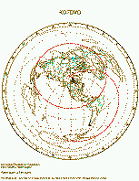
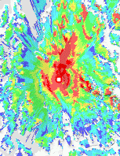

Amateur Radio Station KD7DVD
Seattle, Washington, USA
Contact Information: I don't have a regular schedule yet, but
one of these things really should get my attention eventually...
- Email:
- kd7dvd [whirlpool] arrl [spot] net
- Radiotelephone for repeaters, Freq / Offset / CTCSS tone; in roughly preferential order:
- on 2 m, 146.960 MHz / -0.600 / 103.5 W7VHY Puget Sound Repeater Group (*)
- on 70 cm, 443.650 MHz / +5.000 / 141.3 W7ACS Seattle ACS (*)
- on 40 m, 7268.5 kHz, LSB
(*) -- Probably useful only in the Seattle area...
(If none of those work, then I'm holed up somewhere and will reappear when the heat is off...)